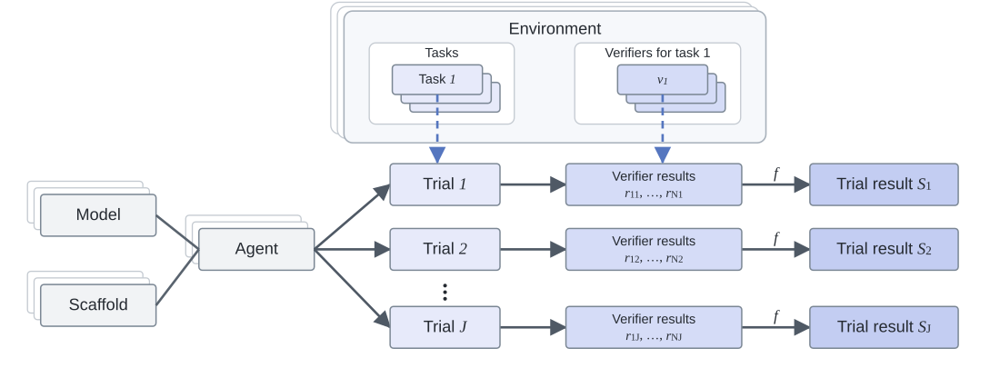

Comprehensively evaluating LLM-based AI agents across interactive environments is difficult because tasks, scaffolds, verifiers, and scoring rules are fragmented across sources. Existing efforts to unify these evaluations remain limited in scale and domain, making costly reruns necessary and leaving available results difficult to compare.
We introduce Messier, a corpus that combines public evaluation results with new runs on underrepresented professional and scientific benchmarks. It brings these heterogeneous sources into a common data model while retaining the context needed to interpret each result in greater depth.
The current release spans 31 benchmarks, including SWE-bench, BFCL, OSWorld, τ²-bench, HarveyAI-Lab, and Toolathlon. Its 734 agents include recent models such as GPT-5.5, Claude Opus 4.7, Gemini 3.1 Pro, and DeepSeek V4 Pro, together with scaffolds such as OpenHands, Claude Code, and Terminus. Across 11,999 tasks, Messier describes 72,000 verifiers by type, including LLM judges, scripts, exact-match checks, and human labels. We also record whether each verifier checks the final output or environment state or examines intermediate interactions. The corpus includes 118,701 trajectories from 15 benchmarks, including MathArena, TerminalBench, τ²-bench, Toolathlon, SWE-bench Pro, and the six benchmarks evaluated through Harbor.
Using this corpus, we find that frontier progress is uneven across benchmark groups and show that scoring rules can change measured performance and agent rankings. We further derive open-data capability scores that correspond closely to Epoch's Evaluation Capability Index (ECI). Researchers can readily extend these scores to estimate performance across custom subsets, such as specific domains, occupations, action spaces, or verifiers.

Item Response Theory (IRT) is a family of mathematical models used to design, analyze, and score tests, surveys, and other psychological or educational assessments. It models the probability of an observed response as a function of latent characteristics of the respondent and the item. In our setting, respondents are models, items are tasks, and each response records whether a model completed a task successfully. The 1PL model places model ability θ and task difficulty β on a shared scale, with success becoming more likely as ability exceeds difficulty. We estimate both from the observed results across overlapping tasks.
By placing all tasks on one shared scale, the analysis allows us to compare difficulty across otherwise different domains, such as mathematics and enterprise workflows. This comparison depends on the strong assumption that the same scale meaningfully represents difficulty across those domains. Separate, multidimensional, or hierarchical scales may better represent differences between occupations, industries, model families, and scaffolds. Additionally, the strength of these comparisons depends on coverage. The data include 250,048 of 1,674,845 possible model-task observations, or 14.9%. Because IRT connects models and tasks through observed results, comparisons are better supported when models are evaluated on overlapping sets of tasks. The matrix below shows the number of models represented in each benchmark group and shared between groups. We therefore welcome new benchmarks, models, and runs that expand the corpus and connect evaluations that currently have little overlap.
The panels below compare Messier ability estimates with Epoch's published general, coding, and mathematics ECI scores. To do so, we match models across the two sources and compute Spearman rank correlation, using the full-corpus fit for general ability and re-estimating model ability on tasks classified under SOC 15-1200 and SOC 15-2000 for coding and mathematics, respectively, while holding task difficulty fixed at its original value.
We repeat this methodology using NAICS classifications for the three industries with the broadest coverage across benchmark groups. For each industry, we re-estimate model ability with the IRT task-difficulty parameters β fixed at their original fit values. The panels compare these estimates with overall ability and include models evaluated on at least 10 tasks from at least two benchmark groups in that industry.
@article{krsteski2026messier,
title={Messier: A High-Resolution Corpus for Cross-Benchmark Agent Evaluation},
author={Krsteski, Stefan and Meyer, Charlotte and Allegre, Guillaume and O'Halloran, Tony and Sallinen, Alexandre},
journal={arXiv preprint arXiv:2607.25891},
year={2026}
}